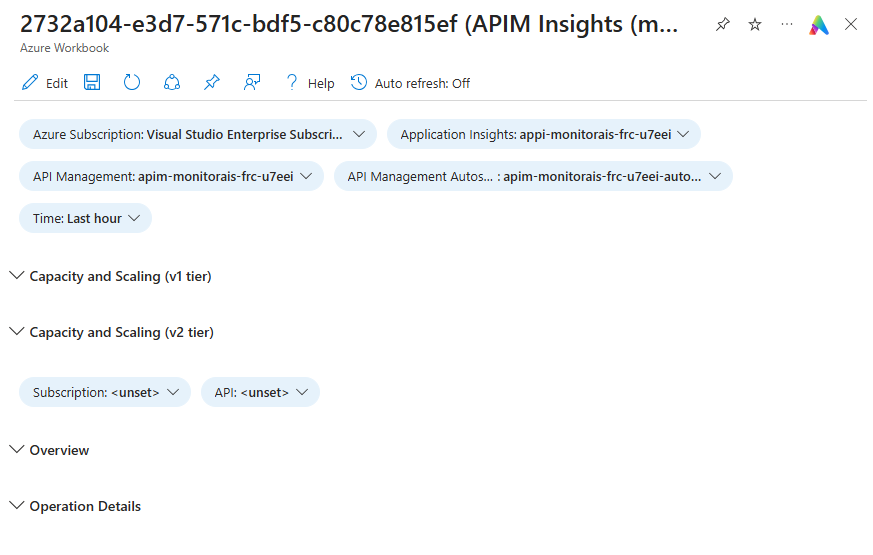
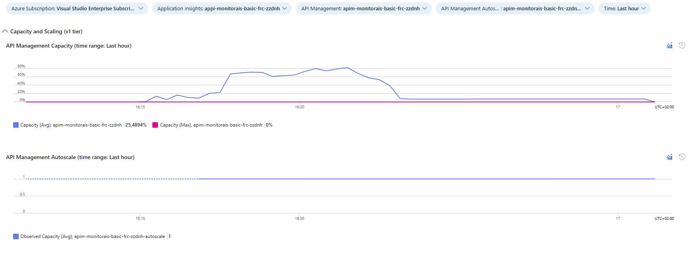
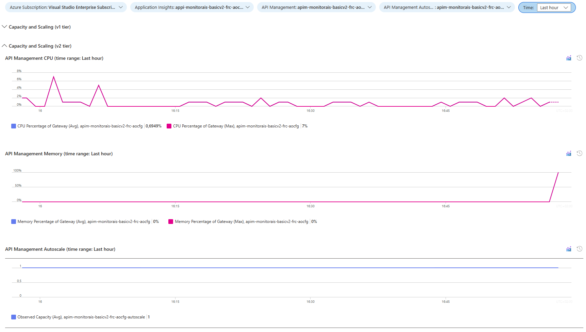
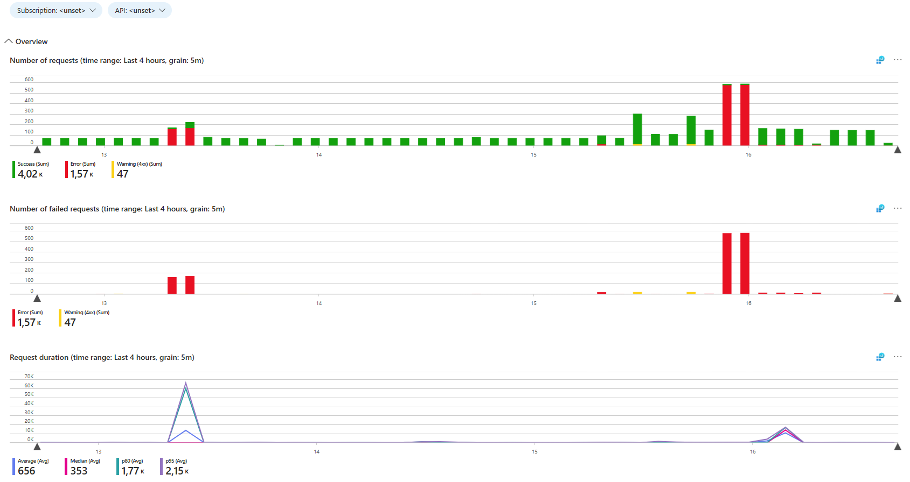
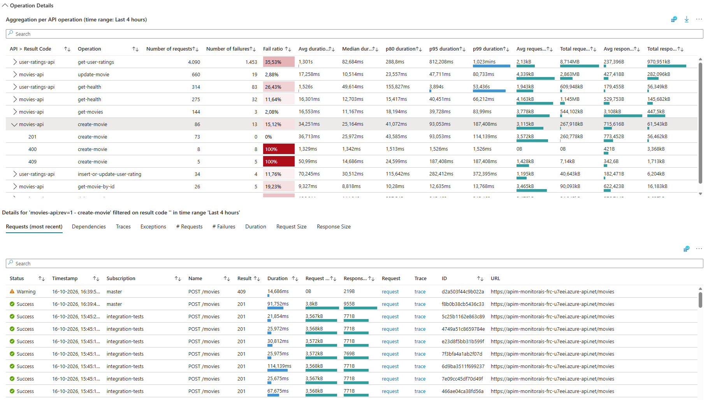
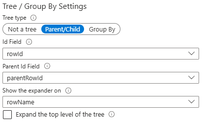

API Management Insights Workbook

A few years ago, I created a workbook for a client to get more insights into how API Management behaves. On a couple of projects afterwards, I really missed it. So, I created a version that can be reused across projects using API Management and Application Insights.
The APIM Requests workbook from my previous post helps you find specific API Management requests. The APIM Insights workbook in this post takes a broader view and shows capacity, scaling, request volume and duration. For a selected operation, it also lets you drill down into the requests, dependencies, traces and exceptions, and shows graphs with the number of requests and failures, the duration, the request size and the response size.
This is the fourth post in my Monitoring Azure Integration Services series.
Table of Contents
- Sample Template
- Workbook Overview
- Parameters
- Groups
- Deploying the Workbook
- Considerations
- Conclusion
Sample Template
I’ve created an Azure Developer CLI (azd) template called Monitor Azure Integration Services to demonstrate different monitoring approaches for Azure Integration Services, including dashboards, workbooks, health checks, alerts and health models. The workbook featured in this post is included in the template. The template has a sample application that lets users manage movies and submit or update ratings. It uses API Management, Azure Functions, Logic App workflows and Azure Service Bus. If you’d like to deploy and try the solution, follow the template’s getting started instructions. The template also includes a demo guide for this workbook.
Workbook Overview
The workbook has four groups: Capacity and Scaling for v1 tiers, Capacity and Scaling for v2 tiers, Overview and Operation Details. The groups are collapsed by default, so you can expand the ones you need.

The definition file is APIM Insights.workbook.
The workbook queries the requests table in Application Insights, so API Management needs to log to it. See the Enabling Application Insights Logging section in my previous post for how to set that up.
I’m assuming you know a bit about editing Azure Workbooks. If not, have a look at my Azure Workbook Tips & Tricks post first.
Comparison with the Analytics Overview Workbook
API Management already has an ‘Analytics Overview’ workbook that you can open from the Monitoring section of the resource. It has a few graphs and some tables that mainly show totals per entity, like API, operation and product. It also has a table with the individual requests. The only parameter you can filter on is the time range.
My APIM Insights workbook differs in a couple of ways:
- The Analytics Overview workbook uses tables like
ApiManagementGatewayLogsin a Log Analytics workspace. To get data in there, you need to add diagnostic settings, enable the logs and set the destination table to ‘Resource specific’. The APIM Insights workbook uses Application Insights logging. - The diagnostic settings logs don’t contain everything. For example, policies like
send-service-bus-messagearen’t logged. In Application Insights, these show up as additional dependencies. - The functionality is different. The APIM Insights workbook displays additional data for a selected operation, like the requests, dependencies, number of requests and duration. It also lets you open the end-to-end transaction details of a request.
- Diagnostic settings don’t work for the Consumption tier, and the workbooks aren’t available through the menu of the API Management instance for this tier. The APIM Insights workbook is deployed as a separate resource and uses Application Insights, so it doesn’t depend on either.
If you want to use the built-in Analytics Overview workbook, you can enable the diagnostic settings with the following Bicep snippet:
resource apimDiagnosticSettings 'Microsoft.Insights/diagnosticSettings@2021-05-01-preview' = {
name: '${apiManagementSettings.serviceName}-diag'
scope: apiManagementService
properties: {
workspaceId: logAnalyticsWorkspace.id
logAnalyticsDestinationType: 'Dedicated'
logs: [
{
categoryGroup: 'AllLogs'
enabled: true
}
]
}
}
Setting logAnalyticsDestinationType to Dedicated sends the logs to the correct tables.
Parameters
The workbook has the following parameters at the top:
- Azure Subscription, Application Insights and API Management: these let me deploy the workbook once and use it for different environments.
- API Management Autoscaling: an optional parameter with the autoscale setting of the API Management instance, which is used to show the number of instances. See Auto Scaling.
- Time: the time range used by all queries and graphs.
- Subscription: a drop-down with the API Management subscriptions used in the selected time range.
- API: a drop-down with the APIs that were called in the selected time range.
The subscription and API filters only apply to the Overview and Operation Details groups.
I’ve configured the default time range to an hour, because the template is usually deployed as a short-lived demo environment. In real-world scenarios, I would set the time range to, for example, 14 days. That makes it easier to spot trends like an increase in request duration over time.
For a more detailed explanation on how to configure parameters in a workbook, see Azure Workbook Tips & Tricks - Parameters.
Auto Scaling
Auto scaling has a separate parameter, because it’s a separate resource that needs to be deployed. This parameter is optional because the Developer tier doesn’t support auto scaling and the Consumption tier scales automatically without a separate autoscale configuration.
In api-management.bicep of the sample template, I’ve added a simple auto scale configuration:
resource apimAutoscaleSettings 'Microsoft.Insights/autoscalesettings@2022-10-01' = {
name: '${apiManagementSettings.serviceName}-autoscale'
location: location
tags: tags
properties: {
name: '${apiManagementSettings.serviceName}-autoscale'
enabled: true
targetResourceUri: apiManagementService.id
profiles: [
{
name: 'Default'
capacity: {
minimum: '1'
maximum: '1'
default: '1'
}
rules: []
}
]
}
}
This sample doesn’t actually scale, because the minimum and maximum capacity are both set to 1. But this way the metric is emitted, so it can be displayed in the workbook.
See Automatically scale an Azure API Management instance for more information on auto scaling API Management.
Groups
The workbook is divided into groups. The Capacity and Scaling groups for the v1 and v2 tiers are separate, because the v2 metrics are different from the v1 metrics. This way, the workbook works for both and you can remove the group you don’t need.
You can expand, for example, the Capacity and Overview groups at the same time to see if an increase in capacity or instances was caused by an increase in requests.
I’ve enabled time brushing on all graphs. This means you can select a time period in a graph and all data in the workbook is filtered accordingly. See Azure Workbook Tips & Tricks - Time Brushing for how to configure this.
Capacity and Scaling
In my Azure Workbook Tips & Tricks post, I mainly use queries to show data. The graphs in the Capacity and Scaling groups are based on metrics instead. They’re fairly simple to configure. You choose ‘Add metric’ instead of ‘Add query’ and configure the metric the same way you would when viewing metrics on the API Management resource.
The v1 tier group has two graphs:
- API Management Capacity: the average and maximum capacity metric of the API Management instance, which measures the utilization of your instance’s computing power (such as CPU and memory consumption).
- API Management Autoscale: the number of instances, based on the observed capacity metric of the autoscale setting. This graph is hidden when the API Management Autoscaling parameter is empty.

The v2 tier group has graphs for the CPU and memory percentage of the gateway instead of the capacity, plus the same autoscale graph.

Overview
The Overview group has three graphs, filtered by the Subscription and API parameters:

The number of requests and number of failed requests graphs use a query similar to the one described in the Number of Requests Graph section of my previous post. Failed requests are already part of the number of requests graph. But when there are a lot of successful requests, the failures are difficult to spot. That’s why they also have their own graph.
The request duration graph uses the following query:
let subscriptionFilter = dynamic([{ApimSubscription}]);
let apiFilter = dynamic([{API}]);
requests
| where customDimensions["Service Type"] == "API Management"
| where customDimensions["Service ID"] == "{ApiManagement:name}"
| extend
subscription = tostring(customDimensions["Subscription Name"]),
api = tostring(customDimensions["API Name"])
| where array_length(subscriptionFilter) == 0 or subscription in (subscriptionFilter)
| where array_length(apiFilter) == 0 or api in (apiFilter)
| make-series
avg = avg(duration),
median = percentile(duration, 50),
p80 = percentile(duration, 80),
p95 = percentile(duration, 95)
on timestamp from todatetime("{TimeRange:startISO}") to todatetime("{TimeRange:endISO}") step {TimeRange:grain}
The query starts like the queries in my previous post. The multi-select parameters are turned into arrays and the filters only apply when an array isn’t empty. This query also filters on the Service ID custom dimension, which contains the name of the API Management instance.
Instead of the number of requests, the make-series operator now calculates multiple aggregations of the request duration (in milliseconds) per time slot: the average, the median and the 80th and 95th percentile. The average can hide a few slow requests, while the percentiles show how slow the slowest requests are. Because make-series uses {TimeRange:grain}, the granularity adjusts automatically to the selected time range.
Operation Details
This is the group I find the most interesting. I’ve used it myself to troubleshoot issues with specific operations or find unexpected behaviour, like operations that fail more often than expected.
The top table shows each operation with its number of requests, failures, duration, request size and response size. You can expand an operation to see the same information per result code. When you select a row, the details for that operation or result code are displayed below the table.

This is the query for the operations table:
let subscriptionFilter = dynamic([{ApimSubscription}]);
let apiFilter = dynamic([{API}]);
let filteredRequests = requests
| where customDimensions["Service Type"] == "API Management"
| where customDimensions["Service ID"] == "{ApiManagement:name}"
| extend
subscription = tostring(customDimensions["Subscription Name"]),
api = tostring(customDimensions["API Name"])
| where array_length(subscriptionFilter) == 0 or subscription in (subscriptionFilter)
| where array_length(apiFilter) == 0 or api in (apiFilter)
| extend
operation = tostring(customDimensions["Operation Name"]),
requestSize = toint(customMeasurements["Request Size"]),
responseSize = toint(customMeasurements["Response Size"])
;
let operations = filteredRequests
| summarize
numberOfRequests = sum(itemCount),
numberOfFailures = sumif(itemCount, success == false),
failRatio = round(100.0 * sumif(itemCount, success == false) / sum(itemCount), 2),
avgDuration = avg(duration),
(medianDuration, p80Duration, p95Duration, p99Duration) = percentiles(duration, 50, 80, 95, 99),
avgRequestSize = avg(requestSize),
sumRequestSize = sum(requestSize),
avgResponseSize = avg(responseSize),
sumResponseSize = sum(responseSize)
by rowName = api, rowId = operation_Name, parentRowId = '', operation, operation_Name, resultCode = ''
| sort by numberOfRequests desc
;
let operationsPerResultCode = filteredRequests
| summarize
numberOfRequests = sum(itemCount),
numberOfFailures = sumif(itemCount, success == false),
failRatio = round(100.0 * sumif(itemCount, success == false) / sum(itemCount), 2),
avgDuration = avg(duration),
(medianDuration, p80Duration, p95Duration, p99Duration) = percentiles(duration, 50, 80, 95, 99),
avgRequestSize = avg(requestSize),
sumRequestSize = sum(requestSize),
avgResponseSize = avg(responseSize),
sumResponseSize = sum(responseSize)
by rowName = resultCode, rowId = strcat(operation_Name, ': ', resultCode), parentRowId = operation_Name, operation, operation_Name, resultCode
| sort by resultCode asc
;
union operations, operationsPerResultCode
The query does the following:
filteredRequestsselects the requests of the API Management instance, applies the subscription and API filters and extracts the operation name. The request and response size come from thecustomMeasurementsthat API Management adds to each request.operationsaggregates the requests per operation. It calculates the number of requests and failures, the failure ratio, the average, median, p80, p95 and p99 duration and the average and total request and response size. The request and failure totals use the sum ofitemCountto account for sampling. Thepercentilesfunction calculates multiple percentiles in one go.operationsPerResultCodecalculates the same aggregations, but grouped by operation and result code.- The
unioncombines both results into a single table, with a row per operation and a row per operation and result code.
The rowId and parentRowId columns are hidden in the table. Instead, they’re used to configure a tree. In the column settings, a ‘Parent/Child’ tree is configured using the rowId, parentRowId and rowName columns. The operation rows have an empty parentRowId, so they’re at the top level. The result code rows have the operation_Name as their parentRowId, so they’re shown below their operation when you expand it.

The operation_Name is a built-in column that includes both the API and the operation name, so it uniquely identifies an operation. For example: movies-api;rev=1 - get-movies. The API Name and Operation Name custom dimensions are still extracted, because they are the readable names of the operations shown in the table.
The operation_Name and resultCode columns are also projected separately and are hidden as well. They’re exported as parameters when you select a row, so they can be used as filters for the details below the table. See Azure Workbook Tips & Tricks - Master-detail Table for how to set that up.
When you select an operation or the underlying result code, more information is displayed for the selection. This includes tables with the executed requests, dependencies, traces and exceptions, and graphs with the number of requests and failures, the duration, the request size and the response size. If you select an operation, the exported resultCode is empty, so the details include all result codes. If you select a result code, the details are limited to that result code.
Deploying the Workbook
I use a generic module to deploy the workbook, as described in Deploy Azure Workbooks with a Reusable Bicep Module. The module is used in this main.bicep of the sample template. Here’s a short snippet:
module apimInsightsWorkbook './modules/workbooks/workbook.bicep' = {
scope: resourceGroup(resourceGroupName)
params: {
environmentName: environmentName
location: location
tags: tags
displayName: 'APIM Insights'
serializedData: string(loadJsonContent('./modules/workbooks/APIM Insights.workbook'))
placeholders: {
AzureSubscriptionId: subscription().subscriptionId
ApplicationInsightsId: appInsights.id
ApiManagementId: apiManagementService.id
ApiManagementAutoscaleSettingsId: apimAutoscaleSettings.?id ?? ''
}
sourceId: appInsights.id
}
}
Compared to the workbook in my previous post, there are two extra placeholders. The ApiManagementId is used to select the API Management instance and to query its metrics. The ApiManagementAutoscaleSettingsId is optional. If the instance has no autoscale setting, which is the case for the Consumption and Developer tiers, it’s an empty string.
You can also deploy the workbook manually, as described here.
Considerations
Queries over Application Insights data can show incomplete results when telemetry is sampled. This applies to this workbook as well. See the Considerations section of my previous post for how to check the retained percentage and for the effect of logging on cost.
The capacity and scaling graphs are based on metrics, not on Application Insights data, so sampling doesn’t affect them.
Conclusion
The built-in Analytics Overview workbook gives a high-level view of API Management, but it needs diagnostic settings and doesn’t include everything that is logged to Application Insights. The APIM Insights workbook fills that gap. It combines capacity and scaling metrics, request and duration graphs and a table with details per operation and result code. From there, you can drill down to view more information like the executed requests, dependencies, traces, etc.
The workbook is a starting point. You can remove the groups you don’t need and adjust the parameters and queries to fit your own APIs.